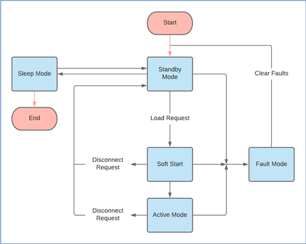

Overview
This one was a four-person 2020 capstone project. It was a battery management system with fully designed IP-Rated battery housing. We completed this project over 8 months throughout Covid-19, making it relatively awkward to work on both remotely and in person. We also were not spared by the global chip shortage, having to make multiple redesigns when our original MCU and various ICs were out of stock. I mainly worked on everything related to the MCU and MCU board, so I won't speak about the mechanical work or the battery protection circuits. The project was also sponsored by the startup Green Waterways, which means that I can't go into too much detail for confidentiality reasons.
Early Stages
The banner picture at the top of the page is the schematic I made and brought up for the PIC32MX530F128H. The BMS logic was relatively straightforward. On powerup or reset the BMS would enter standby mode. It would then either enter sleep mode or transition to active mode if it detected the battery being used. There would also be an error-handling mode, with documentation explaining the priority of each function. When I was designing this system, I originally wanted to learn to use an RTOS to manage the execution. However, we decided that we did not have enough time to implement one. The system used a relatively simple switch case with different modes instead of a scheduler.

We eventually received our PCB and soldered the MCU, battery monitor, and protection circuits. The first thing we did was upload a blinky program I wrote as a simple "hello world". We learned a good deal about prototyping and hardware debugging. A second revision of the prototype board would likely look a lot cleaner!
Time was tight and the board had a few hardware bugs involving the protection circuit, so we presented our project as a battery monitor. Another team member wrote a simple python interface which I delivered the voltage, current, and temperature to using UART. This was a fun, but stressful project (as all capstone projects probably are). I would love to have another go at it again with additional time and resources.
A demonstration of our project can be seen in the following video.